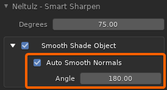
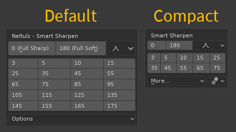

Neltulz - Smart Sharpen
Version: 1.0.10
Last Update: 1/1/2020
A context aware workflow speedup utility, that enables automatic sharpening, smart sharpening, and sharp edge clearing of vertices, edges, and faces, based on selection.
This utility automatically sharpens or clears sharps of edges, similar to how Autodesk Maya sets "hard or soft" edges when using the "soften/harden" feature.
It works by detecting which mode you're currently in (object or mesh), then which selection mode (vertex, edge, or face), whether you have the entire object selected, partially selected, or completely deselected. It will then select sharp edges by a degree value, and then sharpen or clear sharps accordingly to give you a desired result. If you are unsatisfied with the smart sharpen result, you can choose a different sharpen preset until it sharpens or clears sharp only the edges you want.
This utility has the potential to speed up your workflow 5-10x, by allowing you to quickly clean objects with incorrectly sharpened edges.
Table of Contents
- Key Features
- Installation
- How to Use
- Known Issues & Limitations
- License
- Changelog
- Links
- Special Thanks
Key Features
- Sharpen entire object while in Object or Mesh mode
- Soften (Clear Sharp) entire object while in Object or Mesh mode
- Smart sharpen entire object based on edge angle (degrees) while in Object or Mesh mode
- Smart sharpen selection based on edge angle (degrees) while in Mesh mode
- Sharpen only selection (multiple or single vertices, edges, or faces)
- Clear sharp only selection (multiple or single vertices, edges, or faces)
- Access a lot of preset sharpen buttons from the Neltulz - Smart Sharpen Panel
- Hotkeys (CTRL+SHIFT+1 through 0) to perform preset sharpens
- Work on multiple meshes in both Object and Edit mode
- Automatically Enable Auto smooth with 180 degrees and smooth shade to guarantee auto sharpen result.
Installation
- Download the Neltulz - Smart Sharpen zip file anywhere on your computer.
- Run Blender.
- Go to Edit > Preferences.
- In the left sidebar, go to Add-ons.
- At the top right, click Install.
- Browse for the Neltulz - Smart Sharpen zip file and click Install
Add-on from File
Alternatively, you may double click the zip file to install it. - Next to Generic: Neltulz - Smart Sharpen, enable the checkbox.
- At the lower left of the preferences window, click Save Preferences and close the preferences window.
How to Use
Panel
You can access a list of preset Smart Sharpen values by opening the Neltulz - Smart Sharpen panel.
If you do not see the panel, click N on your keyboard to active the panel sidebar.
Hotkeys
| Hotkey | Result | Command | Properties |
|---|---|---|---|
| CTRL+SHIFT+1 | Sharpen | ntz_smrt_shrp.neltulz_smart_sharpen | degreesValue = 0 |
| CTRL+SHIFT+2 | Clear Sharp | ntz_smrt_shrp.neltulz_smart_sharpen | degreesValue = 180 |
| CTRL+SHIFT+3 | Smart Sharp (5 Degrees) | ntz_smrt_shrp.neltulz_smart_sharpen | degreesValue = 5 |
| CTRL+SHIFT+4 | Smart Sharp (15 Degrees) | ntz_smrt_shrp.neltulz_smart_sharpen | degreesValue = 15 |
| CTRL+SHIFT+5 | Smart Sharp (25 Degrees) | ntz_smrt_shrp.neltulz_smart_sharpen | degreesValue = 25 |
| CTRL+SHIFT+6 | Smart Sharp (35 Degrees) | ntz_smrt_shrp.neltulz_smart_sharpen | degreesValue = 35 |
| CTRL+SHIFT+7 | Smart Sharp (45 Degrees) | ntz_smrt_shrp.neltulz_smart_sharpen | degreesValue = 45 |
| CTRL+SHIFT+8 | Smart Sharp (55 Degrees) | ntz_smrt_shrp.neltulz_smart_sharpen | degreesValue = 55 |
| CTRL+SHIFT+9 | Smart Sharp (65 Degrees) | ntz_smrt_shrp.neltulz_smart_sharpen | degreesValue = 65 |
| CTRL+SHIFT+0 | Smart Sharp (75 Degrees) | ntz_smrt_shrp.neltulz_smart_sharpen | degreesValue = 75 |
Known Issues & Limitations
- No pie menu, or popup context menu with preset options.
- Some of the hotkeys may not work. If so, simply go to Edit > Preferences > Keymap, change the filter drop down menu to Key-Binding, search for CTRL SHIFT 1 and disable any conflicting hotkeys. Repeat this until all hotkeys work!
- When running the script on any new object, it will auto smooth normals by 180 degrees, and enable smooth shading mode in order for you to see your result. The auto smooth normals value is not yet customizable, and will override back to 180 degrees every time you run this script.
License
This addon is using the GNU GPL v3.0.
From the GNU GPL v3.0:
Permissions of this strong copyleft license are conditioned on making available complete source code of licensed works and modifications, which include larger works using a licensed work, under the same license. Copyright and license notices must be preserved. Contributors provide an express grant of patent rights.
Changelog
2019-12-31
-
Bug Fix: Auto Smooth Normals and Angle values were not being set correctly from the main operator's "Adjustment" panel at the lower left corner of the 3d viewport

- Bug Fix: The active object would not be smart sharpened if it was not selected.
-
Added new compact panel size which is useful for adding the panel to pie menus or popups using Pie Menu Editor add-on

-
2019-12-26
- Panel is more usable when adding it to a custom pie menu (e.g. when using "Pie Menu Editor" add-on)
2019-12-22
- Set default sidebar tab name to "Neltulz" so that all Neltulz related sidebars from various Neltulz addons will be organized here.
- Changed operator bl_idnames. Sorry if this is an inconvenience.
- Improved sidebar panel significantly. Better use of space.
- You can enable edge sharpness display straight from the sidebar panel
- You can now fine tune the sharpness to whatever value you want from the history panel at the lower left of the 3d viewport
2019-09-01
- Fixed zip file installing incorrectly by putting all files into a subfolder
2019-08-22
- Fixed a bug when trying to sharpen objects when their mesh names do not match their object names.
2019-08-21
- Multi Object while in Edit Mode now smart sharpens correctly
- You can now rename the panel's category tab from the addon preferences.
- Added ability to reset settings
- Moved all scene properties to a custom scene property group.
2019-08-19
- Changed license to GNU GPL v3.0 because it's easier to select on Github.
2019-08-05b
- Keymaps now unregister when disabling or removing the addon.
2019-08-05a
- Fixed a minor naming issue with keymaps
2019-08-04
- Fixed some bugs, added a "Use Advanced Settings" menu
2019-08-03
- First release!
Links
- Blender Discord - For discussing all things blender!
- Floathar's Twitch Stream where he does all things art, and blender work
Special Thanks
- Bobbe - Super helpful with tips for rewriting my code to be better
- JordanS - Very helpful coding feedback
- Preacher - Feedback
- Floathar - Feedback